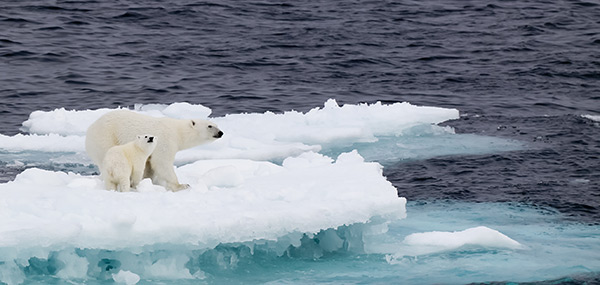

More Information

The Earth's climate has changed throughout history. Just in the last 650,000 years there have been seven cycles of glacial advance and retreat, with the abrupt end of the last ice age about 7,000 years ago marking the beginning of the modern climate era — and of human civilization. Most of these climate changes are attributed to very small variations in Earth’s orbit that change the amount of solar energy our planet receives.
Revolution. (Credit: Luthi, D., et al.. 2008; Etheridge, D.M., et al. 2010; Vostok ice core data/J.R. Petit et al.; NOAA Mauna Loa CO2 record.) Find out more about ice cores (external site). The Earth's climate has changed throughout history. Just in the last 650,000 years there have been seven cycles of glacial advance and retreat, with the abrupt end of the last ice age about 7,000 years ago marking the beginning of the modern climate era — and of human civilization. Most of these climate changes are attributed to very small variations in Earth’s orbit that change the amount of solar energy our planet receives. Scientific evidence for warming of the climate system is unequivocal. - Intergovernmental Panel on Climate Change The current warming trend is of particular significance because most of it is extremely likely (greater than 95 percent probability) to be the result of human activity since the mid-20th century and proceeding at a rate that is unprecedented over decades to millennia.1 Earth-orbiting satellites and other technological advances have enabled scientists to see the big picture, collecting many different types of information about our planet and its climate on a global scale. This body of data, collected over many years, reveals the signals of a changing climate. The heat-trapping nature of carbon dioxide and other gases was demonstrated in the mid-19th century.2 Their ability to affect the transfer of infrared energy through the atmosphere is the scientific basis of many instruments flown by NASA. There is no question that increased levels of greenhouse gases must cause the Earth to warm in response. Ice cores drawn from Greenland, Antarctica, and tropical mountain glaciers show that the Earth’s climate responds to changes in greenhouse gas levels. Ancient evidence can also be found in tree rings, ocean sediments, coral reefs, and layers of sedimentary rocks. This ancient, or paleoclimate, evidence reveals that current warming is occurring roughly ten times faster than the average rate of ice-age-recovery warming
Evidence Showing Reasons For Rapid Climate Change:
[1.]Global Temerature Rise

The planet's average surface temperature has risen about 1.62 degrees Fahrenheit (0.9 degrees Celsius) since the late 19th century, a change driven largely by increased carbon dioxide and other human-made emissions into the atmosphere.4 Most of the warming occurred in the past 35 years, with the five warmest years on record taking place since 2010. Not only was 2016 the warmest year on record, but eight of the 12 months that make up the year — from January through September, with the exception of June — were the warmest on record for those respective months. 5
[2.]Warming Oceans

The oceans have absorbed much of this increased heat, with the top 700 meters (about 2,300 feet) of ocean showing warming of more than 0.4 degrees Fahrenheit since 1969.6
Scientists have studied the rates of basal melt, or the melting of the ice shelves from underneath, of individual ice shelves, the floating extensions of glaciers that empty into the sea. But this is the first comprehensive survey of all Antarctic ice shelves. The study found basal melt accounted for 55 percent of all Antarctic ice shelf mass loss from 2003 to 2008, an amount much higher than previously thought. Antarctica holds about 60 percent of the planet's fresh water locked into its massive ice sheet. Ice shelves buttress the glaciers behind them, modulating the speed at which these rivers of ice flow into the ocean. Determining how ice shelves melt will help scientists improve projections of how the Antarctic ice sheet will respond to a warming ocean and contribute to sea level rise. It also will improve global models of ocean circulation by providing a better estimate of the amount of fresh water ice shelf melting adds to Antarctic coastal waters. The study uses reconstructions of ice accumulation, satellite and aircraft readings of ice thickness, and changes in elevation and ice velocity to determine how fast ice shelves melt and compare the mass lost with the amount released by the calving, or splitting, of icebergs. "The traditional view on Antarctic mass loss is it is almost entirely controlled by iceberg calving," said Eric Rignot of NASA's Jet Propulsion Laboratory in Pasadena, Calif., and the University of California, Irvine. Rignot is lead author of the study to be published in the June 14 issue of the journal Science. "Our study shows melting from below by the ocean waters is larger, and this should change our perspective on the evolution of the ice sheet in a warming climate."
[3.]Shrinking Ice Sheets

The Greenland and Antarctic ice sheets have decreased in mass. Data from NASA's Gravity Recovery and Climate Experiment show Greenland lost an average of 286 billion tons of ice per year between 1993 and 2016, while Antarctica lost about 127 billion tons of ice per year during the same time period. The rate of Antarctica ice mass loss has tripled in the last decade.7
[4.]Sea Level Rise
Global sea level rose about 8 inches in the last century. The rate in the last two decades, however, is nearly double that of the last century and is accelerating slightly every year.
[5.]Extreme Events

The number of record high temperature events in the United States has been increasing, while the number of record low temperature events has been decreasing, since 1950. The U.S. has also witnessed increasing numbers of intense rainfall events.12
[6.]Ocean Acidification

Since the beginning of the Industrial Revolution, the acidity of surface ocean waters has increased by about 30 percent.13,14 This increase is the result of humans emitting more carbon dioxide into the atmosphere and hence more being absorbed into the oceans. The amount of carbon dioxide absorbed by the upper layer of the oceans is increasing by about 2 billion tons per year.15,16.
Link to Website Where Evidence Was Found: https://climate.nasa.gov/evidence/
Leave a comment